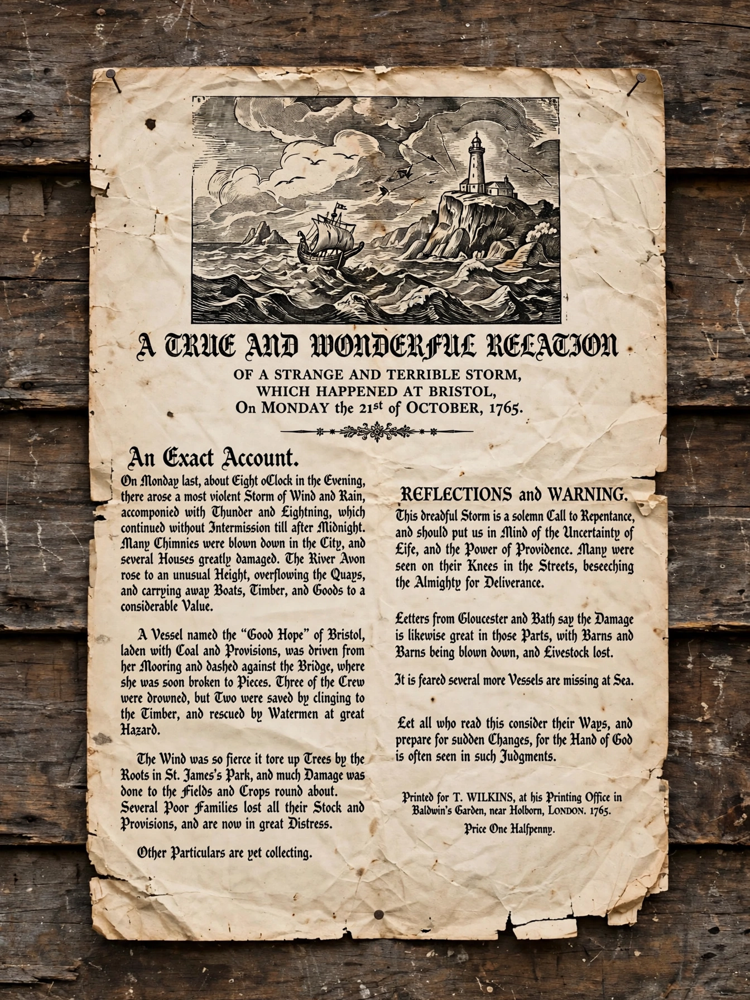

A broadside is a large sheet of paper printed on one side only, historically used as a poster, proclamation, or advertisement. The term also denotes a broadside ballad printed on such sheets, and in naval warfare the simultaneous fire from one side of a warship.

From the 16th to 19th centuries broadsides announced executions, laws, theatre, and songs, sold cheaply by chapmen. The Dunlap broadside of the US Declaration of Independence (1776) is famous.
Figuratively a verbal attack ("a broadside against..."), and in collisions a vehicle struck side-on. See Poster, Broadsheet, Broadside ballad.